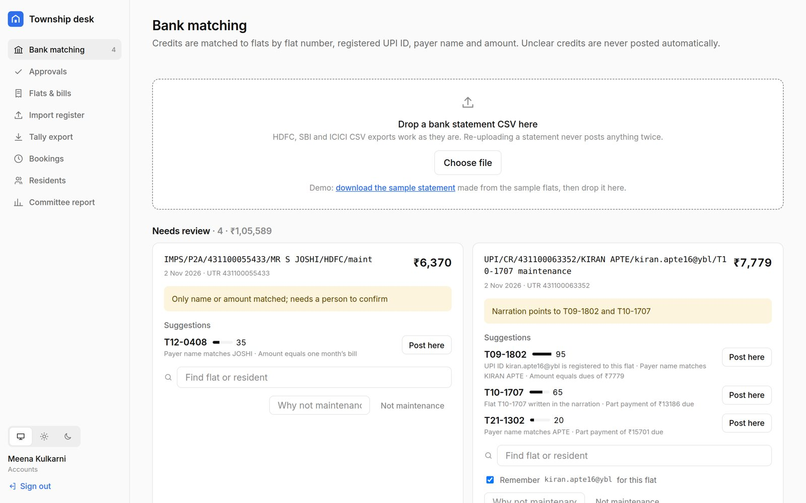
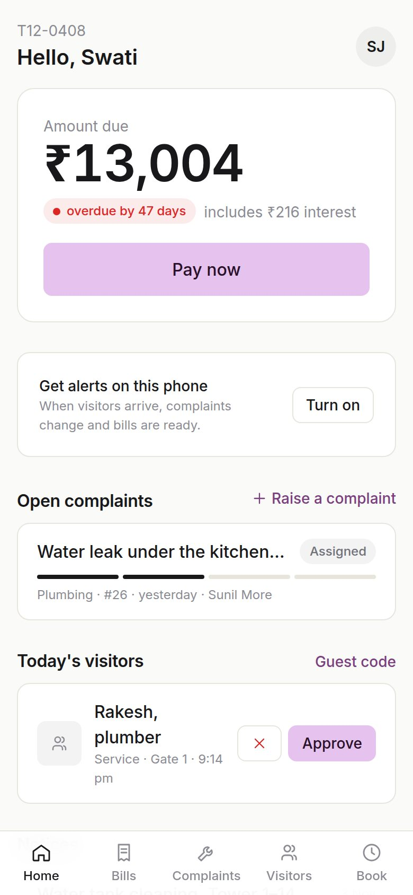
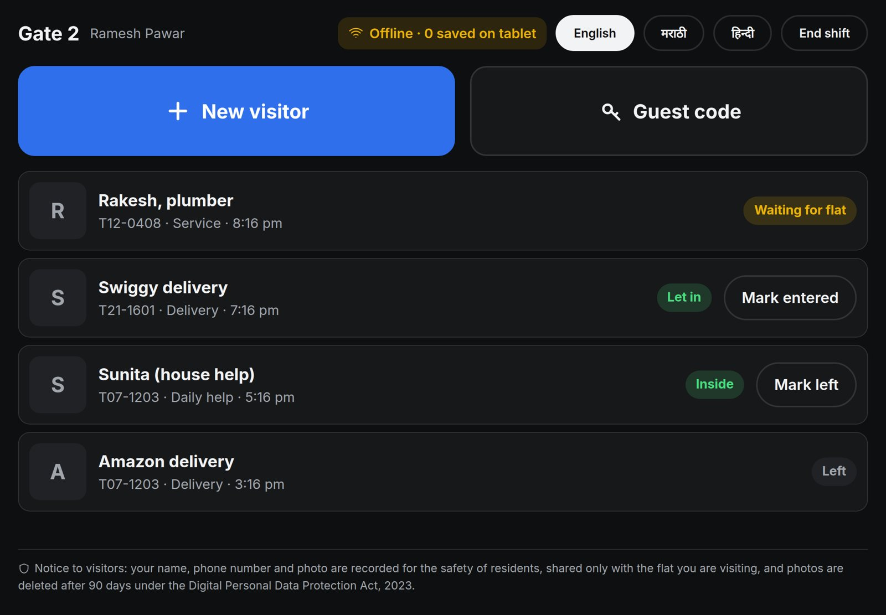
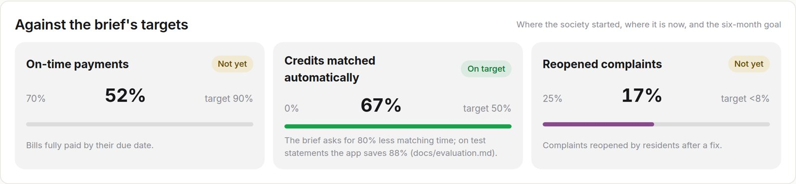

| Repository | https://github.com/AmanSingh-tech/township |
| Live app | https://township-91vm.onrender.com/welcome (Render free plan: the first visit after a quiet spell takes about a minute). Demo sign-ins are listed on the sign-in page. |
| Client | Company A, Pune: 2,400 flats in 28 towers |
| Author, date | Aman Kumar Singh, 4 November 2026 |
Bills are made in Excel, payments are matched to flats by hand before Tally, complaints arrive by phone and 28 WhatsApp groups, and visitors go into paper registers. The brief puts the cost at ₹83.57 lakh a year. It targets on-time payments up from 70% to 90%, 80% less time spent matching payments, and reopened complaints down from 25% to under 8%.
Core build, shipped end to end in 8 screens, on the brief's sample data (its three flats are reproduced exactly and tested):
| Screen | Role | Purpose |
|---|---|---|
| Sign in | All | Mobile number and a one-time code, linked to a flat |
| Resident home | Resident | Dues, open complaints and today's visitors; every action within two taps |
| Bills and test payment | Resident | Area × rate, late interest, test checkout, numbered receipt, ledger |
| Raise a complaint, complaint status | Resident | Text and photo; AI category and urgency; timeline; rating on closure |
| Help desk queue | Help desk | Auto-assignment, status updates, one-tap category change |
| Bank matching | Accounts | Bank CSV in; confident credits post, unclear ones are queued |
| Committee report | Committee | Collections, dues ageing, complaint times; signed and frozen monthly |
Everything else that is built, as optional depth from the brief's "must have":
| Who | Features |
|---|---|
| Residents | Installable web app on every screen size (an Install app button in every navigation bar: the browser's prompt on Chrome and Edge, the steps for Safari on iPhone, iPad and Mac; PNG and maskable icons, shortcuts, an offline app shell); family and tenant members; notices; guest codes with a countdown; amenity booking by slot with rules, fees on the bill and free cancellation until a cut-off; receipts as PDFs; push alerts; English, Marathi and Hindi; light and dark; consent, data download and erasure requests (DPDP) |
| Help desk | Technicians per category and tower; response timers; linked duplicates; notes to the resident; audited corrections to residents' details |
| Accounts | Monthly bill runs; register import from Excel with a preview; Tally export; two-person approval of manual posts, adjustments and login-number changes |
| Committee | Approves bill runs; the brief's targets on the report; sign-off that freezes a month with a SHA-256 fingerprint |
| Guards | Paired tablets with PIN sign-in; visitor photo, approval and guest codes; an offline queue; the DPDP notice on screen; visitor photos deleted after 90 days |
| Admin | Settings, staff, technicians, gate tablets, amenities, notices, the message outbox, data requests, the audit log |
| Everyone | A scroll-driven front page at /welcome; demo logins on the sign-in page; an integrity check (cli verify) |
Out of scope, as in the brief: accounting beyond maintenance (Tally stays), CCTV and barriers, a marketplace.
Given by the brief: ₹6.50 per sq ft a month, late fees under the bye-laws, visitor photos deleted after 90 days, English, Marathi and Hindi, and mocked payments and messages. Where the brief is silent, I assumed the following. Each is a setting or a single function.
| # | Assumption |
|---|---|
| A1 | "Days overdue" counts from the oldest unpaid due date, so T12-0408 (47 days) also owes the next month: ₹12,788 plus ₹216 interest. |
| A2 | Late fee means simple interest on overdue principal at 21% a year (the model bye-law ceiling). Payments clear interest first, then the oldest bill. |
| A3 | Bills are raised on the 1st and due on the 10th. Opening arrears carry no interest in the app. |
| A4 | Bank statements are CSV exports. UPI narrations carry the payer name, UPI ID and UTR, and sometimes a flat number. |
| A5 | A credit posts automatically only on a flat number or registered UPI ID, a score of 80 or more and a lead of 30 over the next flat. |
| A6 | Response targets are 15 min (critical), 2 h (high), 8 h (medium) and 24 h (low). The duty manager is one configured number. |
| A7 | Roles beyond the core two: accounts, committee, admin and guard. Money decisions need two different people. |
| A8 | Receipts are numbered without gaps per financial year, e.g. RCT/2026-27/00001. |
| A9 | One server is enough: about 8 requests a second at the bill-day peak (most bills are paid in the first 10 days). |
flowchart LR R["Resident app"] --> API D["Staff desk"] --> API G["Gate tablet
offline queue"] --> API subgraph S["Node.js process"] API["Express API
roles, validation, rate limits"] W["Outbox worker"] end API --> DB[("PostgreSQL
append-only ledger")] W --> DB API -.-> X["Claude · Razorpay"] W -.-> M["SMS · Web Push"]
Context: one township peaks at about 8 requests a second. Decision: a single Node process with clear modules (billing, matcher, complaints, notify). Consequences: one deploy and no network failures between services; the load test shows 270–300 requests a second on one process.
Context: the committee needs a report it can trust. Decision: bills and payments write ledger lines in one transaction; triggers block updates and deletes, and the app's database role cannot disable them. Consequences: corrections are new adjustment lines, and an integrity check (cli verify) can prove the books balance.
Context: a wrong match puts money on the wrong flat. Decision: score each credit with reasons; post only on strong, unambiguous evidence; queue everything else for a person, with a second person approving. Consequences: every post is repeatable and auditable; the share posted automatically grows as UPI IDs are remembered.
Context: a wrong category is cheap to fix; a missed gas leak is not. Decision: safety words escalate by rule first; Claude classifies with a fixed schema; a local keyword model is used without a key or on any error. Consequences: a complaint is never blocked by the network, and the AI is never the last word on safety.
Context: a crash must not lose a visitor alert or send one for a rolled-back payment. Decision: messages are written in the same transaction as their cause and sent by a worker, urgent first (SKIP LOCKED). Consequences: no extra queue to run; a visitor alert behind 4,200 bill alerts goes out in 0.9 s.
Context: residents open the app for seconds and forget passwords. Decision: a web app installed from the browser, with push alerts; sign-in by a code to the registered number; guards use a PIN on a paired tablet. Consequences: no app store, and one codebase for phones and gate tablets.
flowchart LR U[users] -- "belong to" --> F[flats] F --> B[bills] F --> P[payments] B -- "1 line" --> L[(ledger)] P -- "1 line" --> L K[bank_rows] -- posts --> P K -- "manual post" --> A[approvals] F --> C[complaints] C -. "duplicate of" .-> C F --> V[visitors]
| Rule | Enforced by |
|---|---|
| The books can't be rewritten | Triggers on ledger, payments, audit_log, report_signoffs, and a restricted app role |
| One bill per flat per month | UNIQUE (flat_id, period), so a retried bill run can't double-bill |
| A gateway payment is recorded once | UNIQUE gateway_payment_id, so the callback and webhook are both safe |
| Nobody approves their own request | CHECK (decided_by <> requested_by) |
| Money is whole rupees | Integer columns with non-negative checks |
flowchart TD
A[Bank CSV] --> B{"UTR seen?"}
B -- yes --> X[Skip]
B -- no --> C{"Payout or debit?"}
C -- yes --> Y[Reconcile or ignore]
C -- no --> D[Score flats]
D --> E{"Sure?"}
E -- yes --> F[Post + receipt]
E -- no --> Q[Queue with reasons]
Q --> H[Person picks] --> I[Second person approves] --> F
flowchart TD
A[Complaint] --> B{"Safety words?"}
B -- yes --> C["Critical, SMS duty manager"]
B -- no --> D["Claude or local model"]
D --> E{"Sure?"}
E -- no --> F["Desk sees 'AI unsure'"]
E -- yes --> G[Assign by category and tower]
F --> G
C --> G
G --> H[Link duplicates] --> I["Resolve, then rate or reopen"]
Payment: the server creates the gateway order for the amount it computes; after checkout it verifies the signature and fetches the payment from the gateway, then writes the payment, ledger line, receipt number and alert in one transaction. A signed webhook covers residents who close the app mid-payment. Gate: entries are saved on the tablet while offline and sent with client ids when the network returns, so nothing is duplicated.
| The brief requires | Built as |
|---|---|
| Match bank rows by amount, reference and UPI ID | An evidence score: flat number in the reference +60, registered UPI ID +50, amount equals dues +30, payer name +15; far above dues −40 |
| Unclear payments are never posted automatically | Name or amount alone never posts; conflicts are queued with the top three flats and reasons |
| Classify complaints by category and urgency | Claude with a fixed category list and JSON schema; refusals, invalid answers or an 8 s timeout fall back to the local model |
| Help desk changes a category in one tap | A category menu; below 0.6 confidence the complaint is flagged "AI unsure"; the AI's original guess is kept |
| Fire, gas, lift stuck or shock always escalate | A rule run before the AI, in English, Hindi and Marathi; urgency is set to critical and can't be lowered |
| Link duplicates, never close them | Reports of the same tower asset are linked to one job; each flat closes and rates its own |
npm run eval scores both automations and writes docs/evaluation.md; a test holds each promise below as a floor.
| Complaint triage: 90 labelled complaints (EN, HI, MR, Hinglish) | Local model |
|---|---|
| Category right; right when it says it is sure | 81%; 100% (35% of complaints) |
| Flagged "AI unsure" for the help desk to check | 64% |
| Hazards escalated; false alarms | 14 of 14; 0 |
| Bank matching: 5 statements, 140 credits with known flats, 30 other rows | Result |
|---|---|
| Posted automatically; posted to the wrong flat | 55%; 0 |
| Queued with the right flat as the top suggestion | 98% (100% in the top three) |
| Matching time against doing it by hand (the brief's target: −80%) | −88% (assumed 2 min a row by hand, 30 s to confirm a suggestion) |
What the first run found. Hindi and Marathi words were being split on their vowel signs, so their keywords never matched (50% right; now 86% and 71%). The safety rule missed the Marathi "अडकले" (stuck) and raised alarms on "लिफ्ट बंद" (the lift is off) and "fire lane". All three are fixed. The local model is cautious: it flags most complaints as unsure, which costs the help desk a tap, never a wrong job. With a Claude key the same set runs with --claude.

The brief asks for minimal design and every action within two taps. Warm neutrals with one lilac accent for the next action; six soft tints only to tell categories, people and amenities apart; light and dark themes; loading, empty and error states from shared components. Small interactions carry meaning: the dues card opens into what makes up the amount, a tapped month in Bills shows its sum, a waiting visitor pulses on the timeline, and guest codes count down. Animations stop when the phone asks for reduced motion. The logo is a T made from a tower between two shorter ones; the front page (/welcome) is built with GSAP and loads on its own, so the app screens carry none of it. The desk is denser, for a working day, and the committee report leads with the brief's three targets.



.env.example), and photos are served through 15-minute signed links. Under the DPDP Act: consent, data download, erasure, and visitor photos deleted after 90 days.